Filtro Libreria pezzi
Filtraggio dei pezzi in base allo stato di attrezzaggio
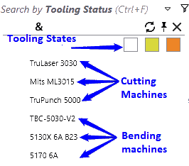
Selezionare il campo Stato di attrezzaggio per filtrare i pezzi in base al loro stato di attrezzaggio. Il menu a discesa visualizza gli stati come caselle di controllo e macchine colorate; bianco vuol dire
OK, arancione significa errore, mentre giallo indica uno stato di avvertenza. Il pulsante Applica tutti (&) è abilitato in questo caso per applicare la condizione del filtro a tutte le macchine selezionate.
| Filtra | Descrizione |
|---|---|
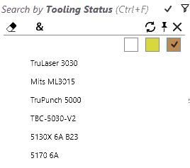 |
Visualizza i pezzi che presentano almeno un errore di attrezzaggio. |
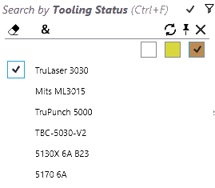 |
Visualizza i pezzi che non possono essere tagliati con la macchina TruLaser 3030. |
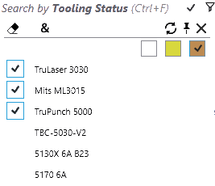 |
Taglio non fattibile: questi pezzi non possono essere tagliati su nessuna macchina da taglio (attenzione "&" selezione qui). |
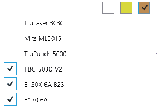 |
Errori di piegatura: i pezzi non possono essere prodotti in quanto non esistono utensili di piegatura validi. |
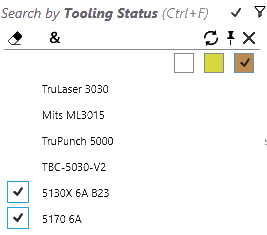 |
SOLO piegatura a rotazione: questi pezzi possono essere lavorati solo perché c’è un utensile di piegatura a rotazione valido. Non possono essere eseguiti su nessuna delle presse piegatrici. |
Filtraggio dei pezzi in base al supporto di piegatura
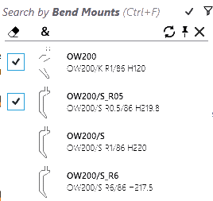
Selezionare il campo Supporto di piegatura per cercare pezzi in base al supporto di piegatura.
-
Il menu a discesa, per questo campo, visualizza l’elenco di utensili di piegatura. Selezionare un utensile per trovare l’elenco dei pezzi che utilizzano l’utensile in questione.
-
L’elenco degli strumenti nel menu a discesa può essere ristretto digitando il nome dello strumento, il tipo di utensile (punzone, collo d’oca, raggio, ecc.) e la descrizione dell’utensile.
-
Selezionare più utensili e applicare il modificatore TUTTI (&) per un elenco di tutti i pezzi che utilizzano entrambi gli utensili.
-
Selezionare un pezzo e fare doppio clic per aprire i dettagli del pezzo per evidenziare gli altri utensili utilizzati nel pezzo per TUTTE le presse piegatrici. La descrizione dell’utensile viene aggiornata con i dettagli del supporto.
-
Fare doppio clic sulla macchina per evidenziare gli utensili di piegatura utilizzati nel pezzo selezionato per la macchina selezionata.
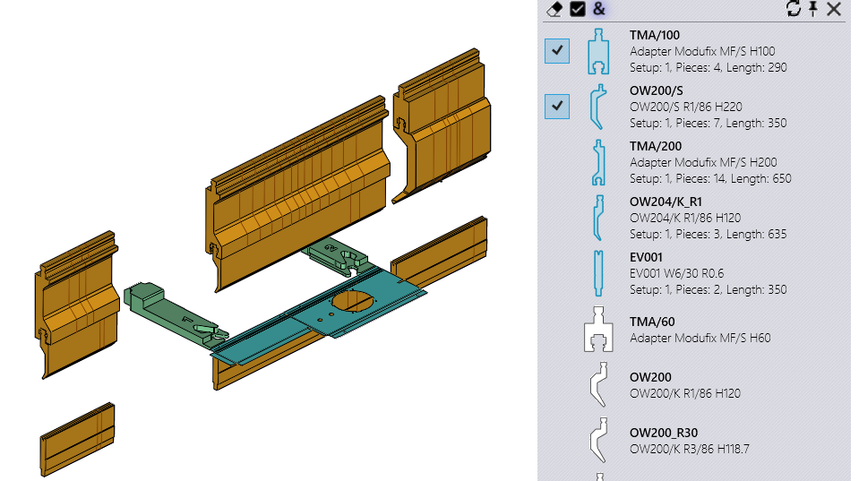
Posizionando il mouse sul pulsante del filtro Supporto di piegatura viene visualizzato il tooltip con le icone degli utensili selezionati. Una parentesi quadra intorno al numero degli utensili significa "TUTTI", mentre una piccola parentesi indica "UNO QUALSIASI".
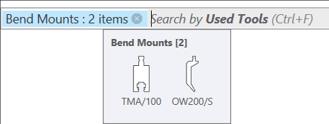
Filtraggio dei pezzi in base all’utensile usato
È identico al filtraggio in base ai supporti usati tranne per i seguenti aspetti:
-
Le icone degli utensili sono in dimensioni proporzionali (non esattamente in proporzione).
-
Quando l’anteprima dell’attrezzaggio è aperta, spostando il mouse sugli utensili evidenziati si evidenzia l’attrezzaggio corrispondente nel riquadro dell’anteprima.
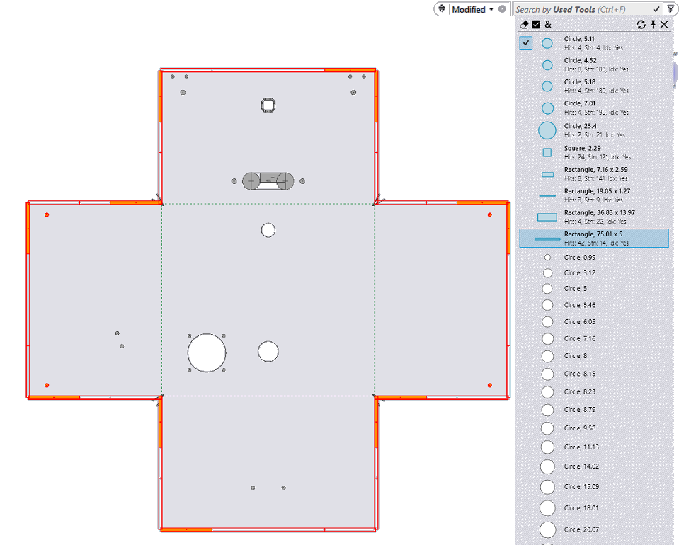
Filtraggio dei pezzi in base allo stato
I pezzi della libreria possono ora essere filtrati in base allo Stato. Le opzioni mostrano TUTTI gli stati applicabili e quindi cambiano a seconda dell’elenco delle parti dei pezzi della libreria e il loro stato attuale. Scegliere Materiale mancante per elencare i pezzi con stato del materiale non risolto.
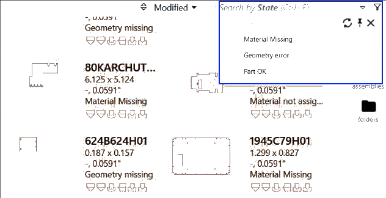
Filtraggio dei pezzi in base ai codici di errore
In combinazione con Stato e Macchine, ora è possibile utilizzare*Codici di errore* dell’attrezzaggio specifici nella ricerca in base allo Stato di attrezzaggio.
L’immagine seguente mostra lo scenario di ricerca: errore di attrezzaggio "Sovraccarico" per la macchina 5170 6A.
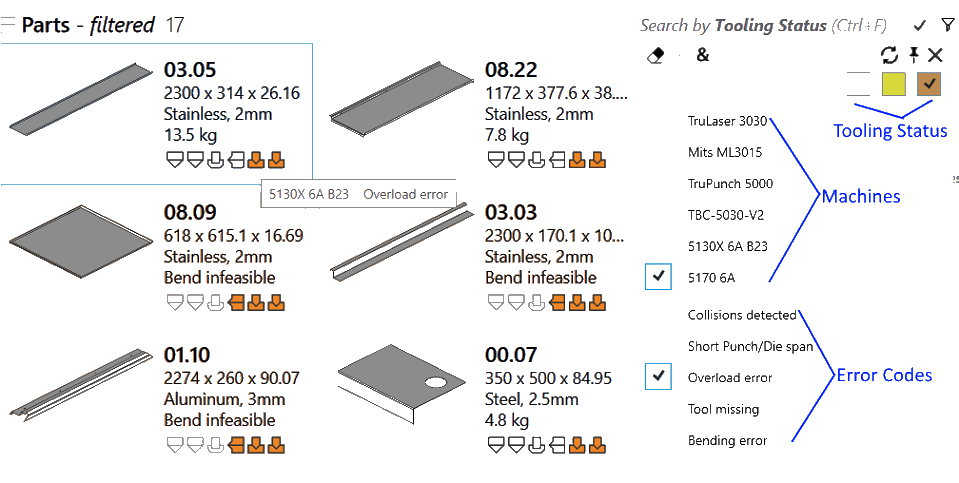
La lista errori mostra gli errori applicabili per la selezione della macchina e dello stato. Si aggiorna alla modifica della selezione della macchina e dello stato per rendere la ricerca più precisa. Quindi, se si seleziona lo stato di avvertenza per una macchina punzonatrice, solo le avvertenze di punzonatura disponibili vengono visualizzati nella lista errori.
Filtro Stato disattivato
Spesso gli utensili dei pezzi vengono disattivati a causa delle eccessive dimensioni della geometria o dell’eccessivo spessore. L’attrezzaggio viene anch’esso disattivato se specificamente negato da un percorso CAD. JFY Plus visualizza il motivo della disattivazione nel tooltip dell’attrezzaggio. Inoltre, tali pezzi possono essere ricercati utilizzando la nuova casella Stato disattivato nel menu di ricerca Stato di attrezzaggio.
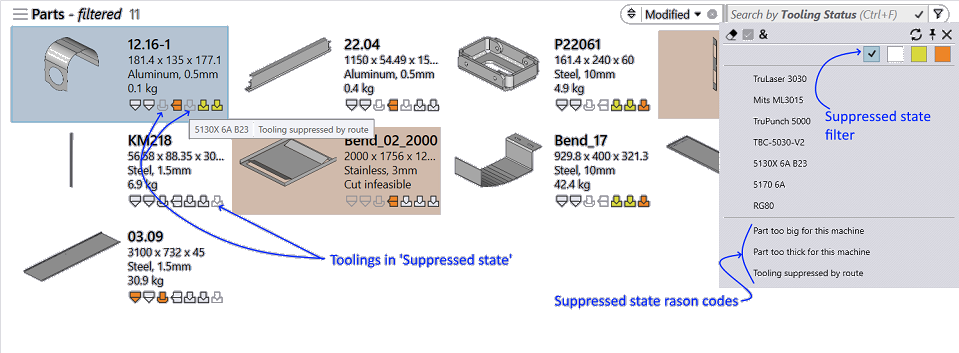